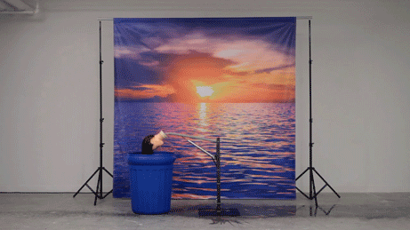

Overview
Welcome to the the Tableau Components style guide! Use the navigation on the left to browse through available components.

Components of... Components
- Component
- Element
- Modifier
- State
- Skin
Class Name Structure
.the-component # Component
.the-component--modifier # Modifier
.the-component__an-element # Sub-element
.the-component:hover # State